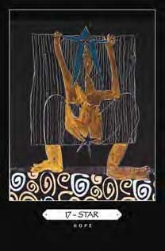

A Tarot deck can be a transformative participant in a dream group. I discovered this a few years ago at a dream theater workshop I was co-facilitating and realized it again this year at my monthly dream discussion group.
A woman in the dream theater workshop held a child’s stuffed toy aloft to represent a mortally wounded bird from her dream. Other participants, imagining the dream as their own, suggested that the bird and what it represented might need to die. The dreamer barely acknowledged their comments. Instead she gazed up at the stuffed bird and declared she would heal it by sheer force of will.
Frustrated by the impasse, a woman in the group took a Tarot deck out of her purse and randomly drew a card, which turned out to be Death/Rebirth. The Grim Reaper’s message was obvious: “Release the old and make room for new consciousness.” The dreamer quietly brought the stuffed bird down from its perch and set it aside. She could ignore her peers but not the pithy wisdom of the Tarot.
This year I introduced my monthly dream discussion group to a book I recently co-authored with artist Connie Lehman. Titled Tarot Life Cards: Using Your Birthday to Chart Your Course, the book comes with Connie’s deck of Major Arcana cards, the 22 Tarot trumps. Numerology based on a birthdate identifies one of these cards as a Life Card, the Tarot version of an astrology sign. Everyone also has a Year Card for each year following the birth year.
After the group discussed each dream, I invited the dreamer to pick a card. No one was obliged to do this, but most dreamers were eager to see what card would come up. Once again, the Tarot proved to be a powerful dream worker.
Jane offered this dream:
I go for medical treatment. There are a large number of people in the room. I feel I’m not seen and not heard. It’s my turn finally. I’m on an exam table. A young man (employed at the medical facility) stands far away. I insist he must come closer. He grabs a plastic storage container and sits on it. It’s too low. I still can’t see him. He says the surgery will be non-invasive and “some people compare it to when they had their wisdom teeth removed.” I ask whether it will be through the vagina or an incision. But all I hear is the word “cancer.” I feel railroaded and mistreated. I’m considering walking out when I wake up.
After we discussed the dream’s possible references to her health, Jane noted that her cousin was facing cancer surgery the following week. As the eldest of her siblings, Jane was providing updates about the life-and-death situation. She wondered how much of her own spiritual perspective to include in these missives, in part because she had been frustrated in her attempt to communicate at a recent family reunion. It was as if her “wisdom teeth” had been removed, symbolically, and she couldn’t assume the elder’s role she envisioned.
The young medical professional in the dream reminded Jane of a nephew she had seen at the reunion and the plastic storage containers reminded her of bins where she stored family papers she wanted to share with him and other relatives.
When Jane pulled the Tarot’s Hierophant/Pope card to reflect the dream, her first reaction was discomfort. She the air. He’s from the cast of the musical “Hair,” had left the Catholic faith of her youth and had no positive associations with a Pope. But Hierophant/Pope also “This is the dawning of the Age of Aquarius!” is her Year Card for the current year. Like it or not, that archetype was asking for attention.

I pointed out that the Tarot Life Cards deck combines the term “Hierophant” with “Pope” to evoke a broader form of moral authority. (A Hierophant was a priest in ancient Greece who acted as an intermediary between humans and the divine.) I also suggested that Jane consider Connie’s unconventional approach to the image.
In traditional Tarot decks, a Pope presides on a throne while two small, reverent figures crouch at his feet. Connie’s Hierophant/Pope, on the other hand, stands in a surreal floating boat made of the curved bodies of two women. He holds a scepter of sorts and a speech bubble broadcasts his words, but he depends on the women’s feminine energy to keep him afloat. The waves he rides evoke emotion, the unconscious and the divine feminine.
Picking the Pope card reinforced Jane’s sense of her potential role in her family. The Tarot Life Card deck’s innovative image showed her she could avoid being heavy handed in this role by balancing masculine and feminine energies.
Another dreamer, Marilyn, connected her dream to a Tarot card even before sharing the dream with the group:
I’m at the shore near where I grew up and there’s a crisis. A boat is stuck in the sand. I ask why this happened and people say, “Because you’re supposed to be steering.” Someone says, “You remind me of Marilyn. Do you know her?” and I say, “I AM Marilyn.”... I start the engine and go out on the water. As I’m steering the boat, I see a guy on a jet ski. He’s above me and then at my side and then soaring in the air. He’s from the cast of the musical “Hair,” and as he goes in and out of the water, he sings, “This is the dawning of the Age of Aquarius!”
Marilyn told us that “Hair” was first produced in 1968, the year she graduated from college and got married. Both for her and for society as a whole, it was a year of dramatic changes and new possibilities—as well as a Chariot year on Marilyn’s own Tarot life chart. She brought the dream to the group just before going on a family trip to China, where her daughter would pick up an adopted son. The Chariot card features a determined charioteer preparing for a journey into the unknown and Marilyn felt that the upcoming adventure, with all its unknowns, paralleled the profound shifts of her 1968 Chariot year.
When she pulled a card at random to reflect the dream, “Star” came up. A symbol of hope and optimism; the card echoed the feeling of the “Aquarius” song in the dream. When she found out that Aquarius is the astrology sign associated with the Star card, Marilyn exclaimed that both her husband and new grandson are Aquarians; she herself is a Cancer, the sign associated with the Chariot card.
In traditional versions of the Star, a demure nude woman in a Grecian drape pours jugs of water on the earth and into a stream. However, Connie’s card shows a woman giving birth to a five-pointed star with another large star on her head.

Marilyn beamed, and the group cheered, when I read aloud the book’s description of the card: “Star squats boldly in the dark, unafraid. She knows that her newborn will light up the night.” ∞